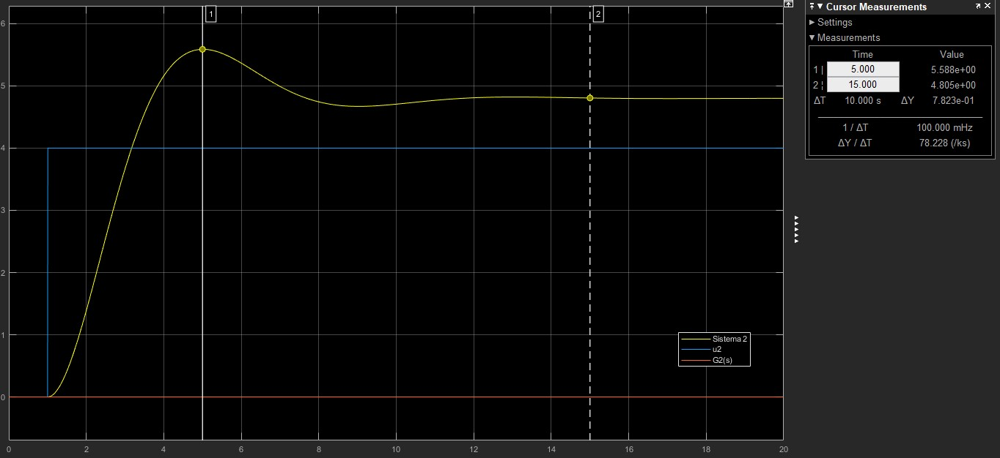
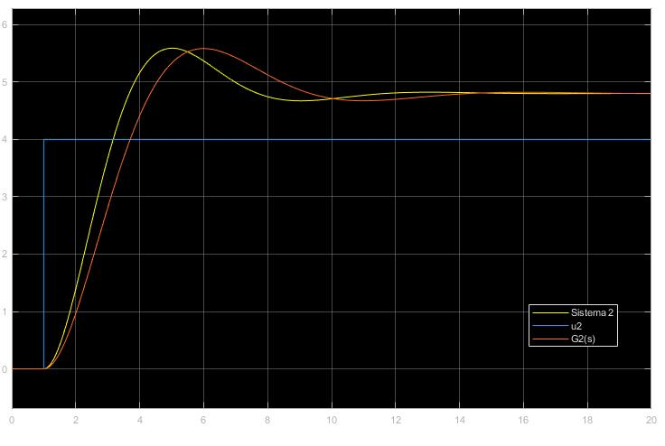

(PART) Procedimentos Lab 3
Problema 3.1
Aplique um degrau \(u(t) = 2\) no Sistema 1 do arquivo MatLab3.mdl do Simulink. Pelas características da resposta, modele o Sistema 1 como uma Função de Transferência \(G_1(s)%\) de primeira ou segunda ordem. Em seguida, identifique os parâmetros do modelo utilizando a equação (3.2) ou (3.4). Compare a resposta do modelo identificado com a do Sistema 1.
Resolução
Simulando o sistema do modelo 1 obtemos o resultado abaixo.

Pela curva feita espera-se que a Função de Transferência seja de primeira ordem. Utilizando as ferramentas fornecidas pelo Simulink foi estimado que
\[
y(\infty) = 1.6 \\
0.95y(\infty) = 1.52 \implies t_s(5\%) = 9.97s \implies \tau = 3.33
\]
Assim, \[ G_1(s) = \frac {0.8}{3.33s+1}. \]
Simulando \(G_1(s)\), temos o resultado apresentado abaixo.

Percebe-se, assim, que a Função de Transferência \(G_1(s)\) se aproxima satisfatoriamente bem do Sistema 1.
Problema 3.2
Aplique um degrau \(u(t) = 4\) no Sistema 2. Pelas características da resposta modele o Sistema 2 como uma Função de Transferência \(G_2(s)\) de primeira ou segunda ordem. Em seguida, identifique os parâmetros do modelo utilizando a equação (3.2) ou (3.4). Realize os cálculos na linha de comando do Matlab (\(\ln{(x)} \implies \log{(x)}\) e \(\sqrt{x} \implies \text{sqrt(x)}\)).Compare a resposta do modelo identificando com a do Sistema 2.
Resolução
Simulando o sistema do modelo 1 obtemos o resultado abaixo.

Pela curva feita espera-se que a Função de Transferência seja de segunda ordem. Utilizando as ferramentas fornecidas pelo Simulink foi estimado que
\[
y_p = 5.588\\
y(\infty) = 4.805 \\
t_p = 5s
\]
Dessa forma, aplicando as equações 3.4, temos que \[ K = 1.2, \quad M_p = 0.163, \quad \xi = 0.5 \quad \text{e} \quad \omega_n = 0.7255. \]
Dessa forma, a Função de Transferência \(G_2(s)\) será \[ G_2(s) = \frac {0.6316}{s^2 + 0.7255s + 0.5264}. \] Simulando \(G_2(s)\), temos o resultado apresentado abaixo.

Percebe-se, assim, que a Função de Transferência \(G_2(s)\) se assemelha ao Sistema 2,porém, com menor precisão que a função \(G_1(s)\) se aproximou do Sistema 2.
Problema 3.3
Parte A
Aplique um degrau \(u(t) = 3\) no Sistema 3. Obtenha um modelo aproximado para o Sistema 3 como uma Função de Transferência \(G(s)\) de primeira ordem. Agora implemente o diagrama de blocos em malha fechada da Figura 3 para o Sistema 3 com \(r(t) = 1\) do tipo degrau e \(K_c = 3\)Observamos que, na Figura 3, se \(G(s)\) é de primeira ordem, então a Função de Transferência em malha fechada \(F(s)\) também será de primeira ordem para qualquer valor de \(K_c > 0\). A resposta do Sistema 3 em malha-fechada está de acordo com tal propriedade? O que pode estar errado?
Resolução
Simulando o sistema do modelo 1 obtemos o resultado abaixo.

Pela curva feita espera-se que a Função de Transferência seja de primeira ordem. Utilizando as ferramentas fornecidas pelo Simulink foi estimado que
\[
y(\infty) = 3.9 \\
0.95y(\infty) = 3.8415 \implies t_s(5\%) = 3.22s \implies \tau = 1.072
\]
Assim, \[ G_3(s) = \frac {1.3}{1.072s+1}. \]
Simulando \(G_1(s)\), temos o resultado apresentado abaixo.

Percebe-se, assim, que a Função de Transferência \(G_B(s)\) não se aproxima satisfatoriamente bem ao Sistema 3. Aplicando a malha fechada vista na figura 3, temos o resultado apresentado abaixo.

Como \(K_c = 3 > 0\) e a Função de Transferência em malha fechada retornou um sistema de segunda ordem, percebe-se a resposta não está de acordo com a propriedade estabelecida. Desta forma, presume-se que \(G(s)\) não é de primeira ordem e sim de segunda.
Parte B
Identifique \(F(s)\). Em seguida, identifique \(G(s)\)indiretamente através da equação (??). Para isto, utilize os seguintes comandos no Matlab:
F = tf([K*wn^2], [1 2*ksi*wn wn^2])
G = F/(Kc-Kc*F)
G = zpk(minreal(G)) % minreal simplifica e zpk fatoraNote que \(G(s)\) é de segunda ordem com pólos reais. Neste momento, temos condições de responderm o que estava errado em nossa modelagem inicial do Sistema 3 como um sistema de primeira ordem. Compare a resposta em malha-aberta de \(G(s)\) (identificando indiretamente) com a do Sistema 3 para \(u(t) = 3\) do tipo degrau.
Resolução
Simulando o sistema do Sistema 3 em malha fechada e utilizando as ferramentas fornecidas pelo Simulink foi estimado que
\[
y_p = 0.868 \\
y(\infty) = 0.796 \\
t_p = 0.4s
\]
Assim, tem-se que: \[ K = 0.796, \quad M_p = 0.09, \quad \xi = 0.61 \quad \text{e} \quad \omega_n= 9.888. \]
Dessa forma, tem-se que \[ F(s) = \frac {77.83}{s^2+ 12.01s +97.77} \] que gera a curva abaixo.

Assim, é possível calcular \(G(s)\) a partir de \(F(s)\), tendo como resultado \[ G(s) = \frac {25.94}{s^2+12.025s+19.96}. \]
Agora é possível comprar \(G(s)\) com sua curva anterior, gerando o resultado abaixo.

Percebe-se que, considerando o modelo como uma Função de Transferência de segundo grau obtida através de \(F(s)\) é possível encontrar a curva exata correspondente ao Sistema 3.